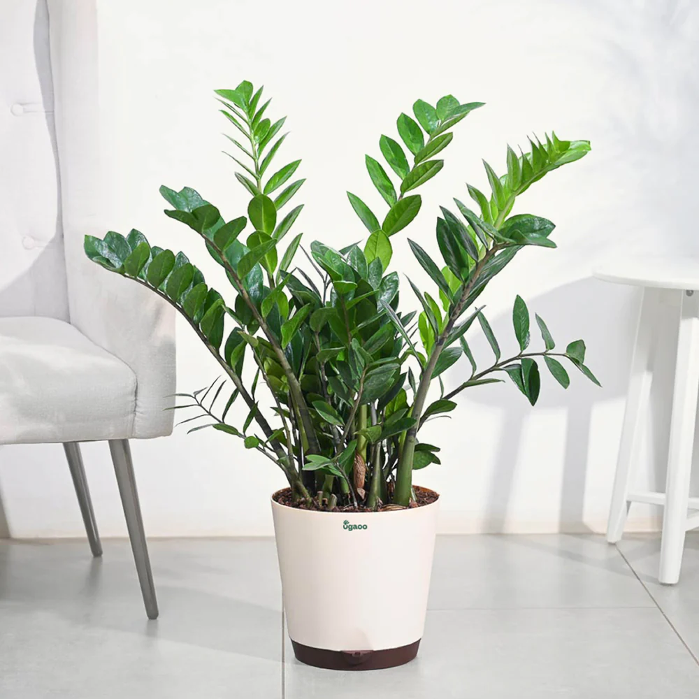

The ZZ Plant is famous for surviving extreme neglect and low light conditions.
Tolerates low light, thrives in medium light.
Water every 2–3 weeks. Very drought-tolerant.
Grows best at 18–28°C.
Use well-draining mix; repot every 2 years.